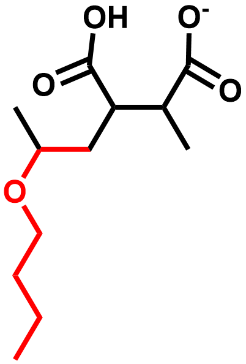

Vinyl ether maleic acid polymers: tunable polymers for self-assembled lipid nanodiscs and environments for membrane proteins
Biomacromolecules, 2024, 25(10), 6611–6622 • DOI: 10.1021/acs.biomac.4c00772
9 Peer-Reviewed Journal Articles • See full list via Google Scholar →
Biomacromolecules, 2024, 25(10), 6611–6622 • DOI: 10.1021/acs.biomac.4c00772

Polymer Chemistry, 2026, 17(2), 194–206

ACS Macro Letters, 2026, 15(7), 1035–1041
Polymer, 2026, 129999

Biochimica et Biophysica Acta (BBA) - Biomembranes, 2025, 1867(5-6), 184424
Biophysical Chemistry, 2025, 107566
Chemistry and Physics of Lipids, 2025, 105562

Analytical Biochemistry, 2022, 647, 114692
Polymer Chemistry, 2022, 13(31), 4547–4556